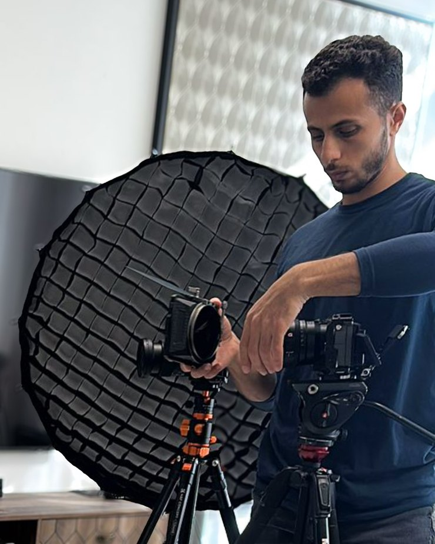

אתם יודעים את החומר. אני דואג שהוא ייראה ויישמע כמו שצריך.
אני מפיק וידאו למרצים, ליוצרי קורסים ולבעלי עסקים. קורס דיגיטלי, תיעוד הרצאה, עדות לקוח או סרטון שיווקי, מהתכנון ועד הקבצים המוכנים להעלאה.
מה אני מפיק בשבילכם
רוב הלקוחות שלי יודעים בדיוק מה הם רוצים להעביר, ופחות מה צריך כדי שזה ייראה טוב. זה החלק שאני לוקח על עצמי.
קורס דיגיטלי
הפקה של קורס שלם: תכנון הפרקים, יום צילום, עריכה, גרפיקה וכתוביות. אתם מקבלים סדרת שיעורים מוכנה להעלאה.
תיעוד הרצאה או סדנה
צילום בכמה מצלמות עם הקלטת אודיו נפרדת, כדי שההרצאה תיראה כמו הפקה ולא כמו הקלטה מהקהל.
עדויות לקוחות
ראיון קצר עם לקוח מרוצה, ערוך לגרסה לאתר ולגרסאות קצרות לרשתות.
תוכן שיווקי לרשתות
סרטונים קצרים ומאונכים לאינסטגרם, לפייסבוק וליוטיוב, ערוכים עם כתוביות ומותאמים לפורמט של הפיד.
וובינרים ושידורים חיים
ליווי טכני מלא לוובינר: מצלמות, תאורה, אודיו, שיתוף מסך והקלטה, כדי שתתרכזו במה שאתם אומרים ולא בטכניקה.
מושן גרפיקס ואנימציה
איורים בתנועה וסצנות מונפשות שמסבירות רעיון מופשט שקשה לצלם.
עבודות אחרונות
מתחת לכל עבודה כתוב מה בדיוק עשיתי בה.
סדרת סרטונים ארוכים ליוטיוב
סדרה של סרטוני טוקינג הד באורך מלא לערוץ של ליבנת אורינובסקי. אני מצלם, עורך, מכניס גרפיקה ומוסר קובץ מוכן להעלאה.
עקרונות ויראליים · 16 דקות
15 מיתוסים על שיווק · 23 דקות
איך לייצר רעיון ויראלי · 17 דקות
עם מי עבדתי עד עכשיו
ליבנת אורינובסקי, מתן ניסטור, נועה זיתון, רוני פישמן, יפית פרץ, עמנואל עדן דורי, דבורי קרנובסקי, תום צדקה, רחלי אבודרהם ואדר מרלינסקי.
שלומית שבתאי בונה קורסים דיגיטליים לבעלי עסקים, ואני הספק שלה. היא מכינה את המוצר ואני מצלם ועורך. זאת העדות הכי טובה שיש לי: מי שהמקצוע שלה הוא בניית קורסים בוחרת בי כדי להפיק אותם.
מה לקוחות שעבדו איתי אומרים
איך זה עובד
שלושה שלבים, בלי הפתעות באמצע.
שיחה קצרה
נדבר על מה אתם רוצים להעביר, למי, וכמה סרטונים צריך. בסוף השיחה תדעו בדיוק מה כולל התהליך ומה המחיר.
יום צילום
אני מגיע עם המצלמות, התאורה והאודיו, ומביים אתכם מול העדשה. אתם צריכים רק לדעת את החומר.
עריכה ומסירה
עריכה, גרפיקה, צבע וסאונד. אתם מעורבים בדיוק כמה שתרצו: לעבור על גרסה ראשונה ולהגיד מה לשנות, או להשאיר לי את זה לגמרי.
מי אני

אני אביחי תרם, מפיק וידאו. אני לוקח אחריות על כל שלב בדרך: הצילום, העריכה, הגרפיקה, הצבע והסאונד. אני מתכנן את הצילום איתכם מראש, מגיע עם כל מה שצריך, מעדכן אתכם לאורך הדרך ומוסר בתאריך שסיכמנו.
מתכננים סרטון או קורס?
השאירו פרטים ואחזור אליכם.